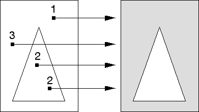

For paths drawn in alternate mode (as with area primitives), the following is true:
The following figure shows how the operating system determines the filled portion for the path shown in the previous figure. The path outside the triangle, but inside the rectangle, is filled, because the imaginary lines drawn from those points in the positive x-direction intersect the path boundaries an odd number of times.

Calculating Filled Paths Constructed in Alternate Mode
Parts of the path with odd tallys are filled; parts with even tallys are not filled.